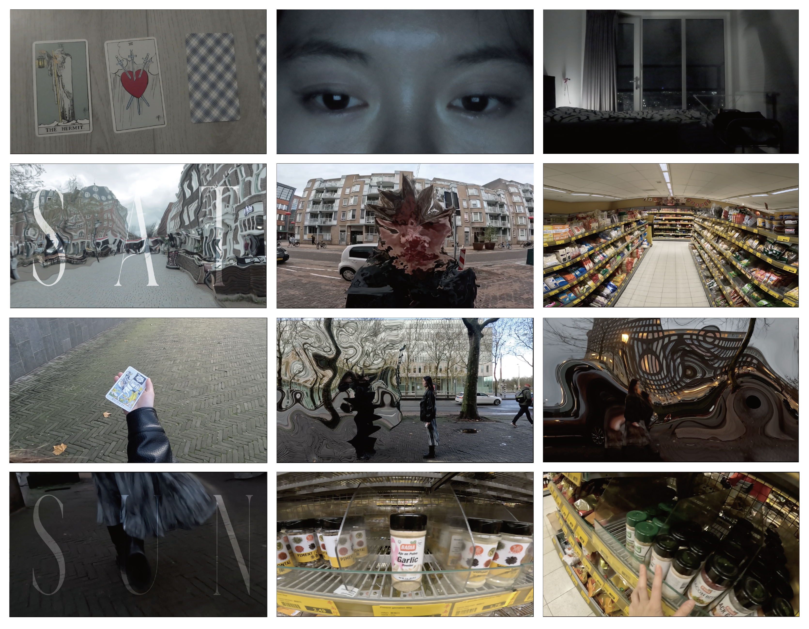
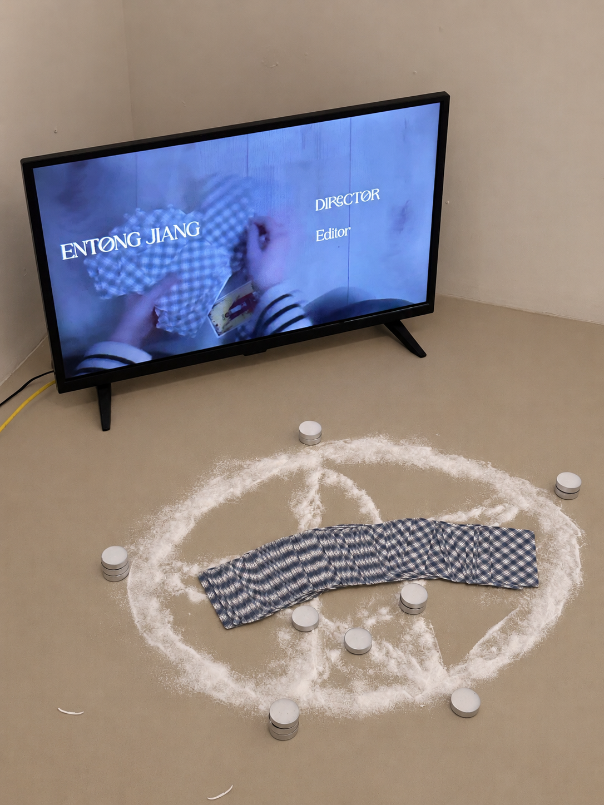

A girl draws seven tarot cards to foresee her week — one for each day.
On the final day, she draws Death.
Throughout that day, she waits for it to happen, imagining what “Death” might mean.
Is it her obsession that brings it into being, or the tarot’s silent suggestion?
Tarot is not prophecy, but a visual bridge to the subconscious — a means of revealing inner truth rather than foretelling reality.

